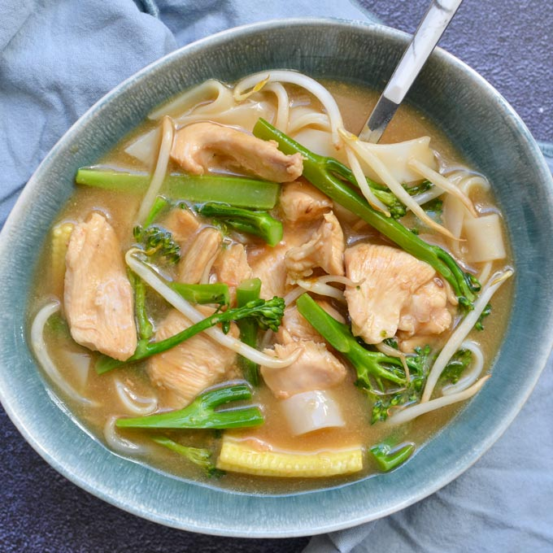

Pad Lad Nar

Description
Chewy wide rice noodles are drenched in a luscious pork gravy; it's the "comfort food" of Thai street food. It's simple and quick to make, but the quality of ingredients are important, so some attention is required.
Ingredients (Serves 4)
- 10oz wide rice noodles
- 4tbsp vegetable oil
- 1tbsp black soy sauce
- 1/2lb chicken, cut into thin slices
- 3tbsp tapioca flour
- 1tbsp Maggi seasoning
- 1.5 cups broccoli
- 1tbsp coarsely chopped garlic
- 1tbsp yellow bean sauce
- 3 cups chicken stock
- 1tbsp fish sauce
- 1tbsp oyster sauce
- 1.5tbsp sugar (or to taste)
- .5tsp Thai pepper powder
Steps
- Soak the rice noodles in warm water for 30min, then rinse in cold water
- Add the noodles to a pot of boiling water for 1min. Remove and rinse in cold water again, and set aside
- Toss the sliced chicken with the Maggi seasonsing and 1tbsp of tapioca flour. Marinate for 10min
- Separate the noodles in a mixing bowl and toss thoroughly with the black soy sauce and 1tbsp vegetable oil
- Fry the noodles in a nonstick pan until golden brown. Remove from pan and keep warm
- Saute the garlic in oil over medium heat until browned. Add the yellow bean sauce and stir until fragrant
- Add the chicken to the garlic and yellow bean sauce and saute until cooked. Add 2.5 cups of chicken stock
- When stock begins to boil, add broccoli and season with fish sauce, oyster sauce, and sugar. Stir well.
- Mix the remaining .5 cup of chicken stock with the remaining tapioca flour, then stir in with the chicken and broccoli until it thickens. Remove from heat
- Arrange the fried noodles on a serving plate, and spoon the gravy over the noodles. Sprinkle with Thai pepper powder, and serve